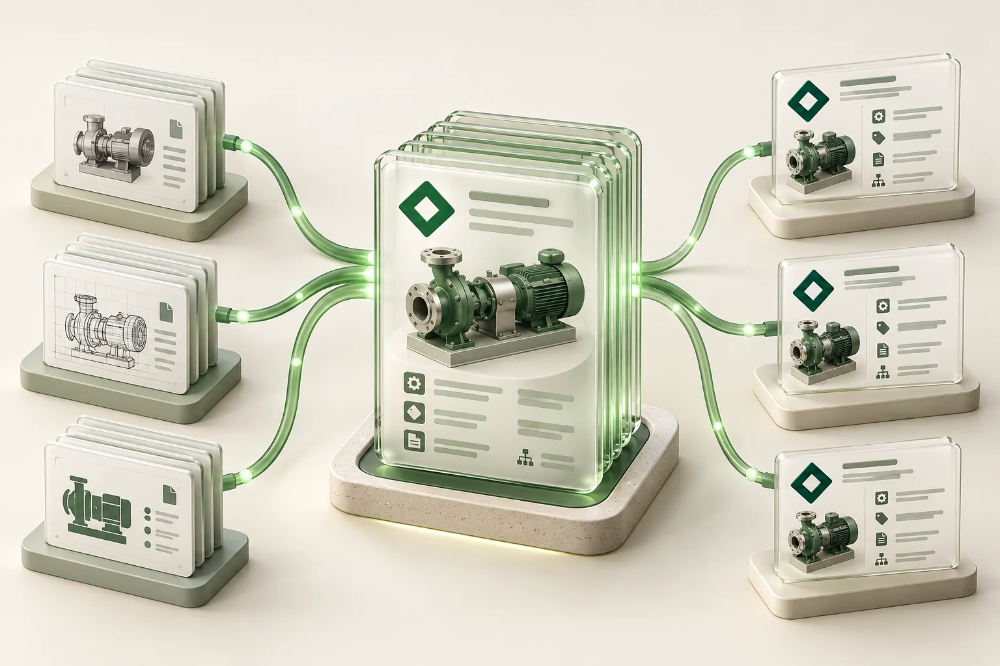
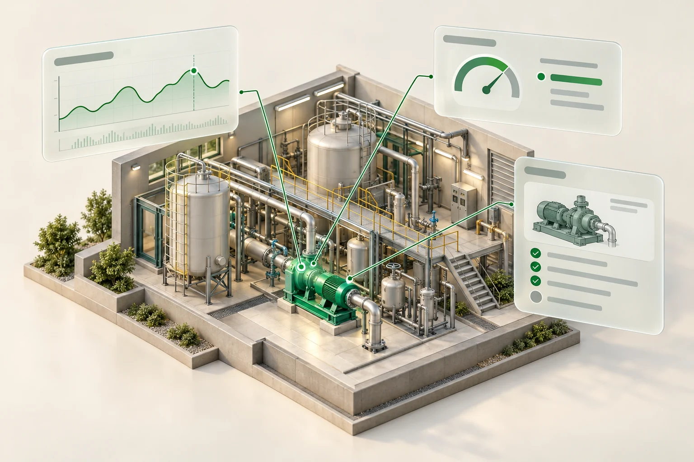

01
Context before generation
My field and software experience helps me define the user’s problem, system boundaries and expected behavior before asking AI to implement a solution.
SAMSUNG ELECTRONICS · TAEKJUN (TJ) LEE
A field engineer turned software developer. I connect user needs, full-stack development, AWS delivery and production operations.
Turn firsthand operational experience into practical software requirements.
See it in practice ↗Connect web applications, databases, AWS and engineering APIs.
See it in practice ↗Build for deployment, exception handling and ongoing operations.
See it in practice ↗Python / FastAPI · Vue.js · SQL / Oracle · AWS · Linux / CI/CD

AIEstablished common asset identifiers and master-data rules to connect engineering information across systems.
Read case study ↗Automated drawing intake, extraction and validation to keep connected engineering data more consistent, current and rich in detail.
Read case study ↗AI-assisted delivery, guided by shared standards and engineering judgment.
My approach →SELECTED SYSTEMS & AUTOMATION
Each platform addressed the next information gap: shared asset data, drawing context, connected 3D models, then a faster and richer update cycle.
Established common asset identifiers and master-data rules to connect engineering information across systems.
Read case study ↗Extended shared asset data into drawing information, connecting equipment records with consistent spatial and engineering context.
Read case study ↗
AIConnected asset data and 3D models so users could explore equipment together with operating information from eight systems.
Read case study ↗Automated drawing intake, extraction and validation to keep connected engineering data more consistent, current and rich in detail.
Read case study ↗PARALLEL IMPROVEMENT & EXPLORATION
Alongside the platforms: data and operational automation across projects, plus engineering-agent prototypes.
 AI
AIImproved efficiency across project operations through dataset management, data-quality dashboards and automated ETL monitoring.
Read case study ↗Prototyping Bedrock AgentCore assistants to query engineering data, review values and retrieve quality cases with supporting evidence.
Read case study ↗02 / AI ENGINEERING PHILOSOPHY
I believe AI has changed the way systems are developed. Code generation is widely accessible, but the quality of the result still depends on domain knowledge, engineering experience and the standards we apply.
I use AI to turn engineering judgment into a repeatable team practice: define the problem, agree on standards, generate within those boundaries, then review and verify.
My field and software experience helps me define the user’s problem, system boundaries and expected behavior before asking AI to implement a solution.
I encode coding patterns, naming, API contracts, UI conventions and error-handling rules in SKILL.md. Different teammates using AI can work toward the same patterns and standards.
Clear interfaces, modular responsibilities and reusable patterns help generated code fit a shared codebase, support collaboration and remain adaptable as requirements change.
I define functional acceptance criteria and test scenarios before generation, including boundaries, exceptions and recovery. Generated code must have behavior that can be inspected and tested.
The skill recipes make the rules explicit: UI design, code structure and test generation follow predefined expectations across contributors and AI-assisted tasks.
ui-design/SKILL.mdcoding-standards/SKILL.mdtest-generation/SKILL.mdMy goal is to improve team consistency, reliability, maintainability and delivery quality through AI—not just save individual effort. I retain responsibility for the engineering decisions and review of generated results. This portfolio also uses AI-assisted design and development.
03 / EXPERIENCE & BACKGROUND
Business systems and automation engineer at Samsung Electronics, Device Solutions.
Built firsthand knowledge of utility operations and user workflows through equipment maintenance, monitoring-data analysis and anomaly investigations.
Expanded from engineering data and process improvement into end-to-end system development.
TECHNICAL TOOLKIT
Python · SQL · JavaScript · Java · FastAPI · Vue.js · Next.js · REST APIs
AWS S3 · Lambda · EventBridge · SQS · CodeCommit · CodePipeline · CodeDeploy · Linux · Nginx · Git
Oracle · ETL/EAI · Spotfire · ACC · Revit/BIM · Bedrock AgentCore · MES/MIS
M.S. Industrial Engineering · Sungkyunkwan University · Feb 2026
GPA 4.38/4.5
Thesis: Demand-Aware Pressure-Stable Screw Compressor Control Using Reinforcement Learning and XAI
B.S. Mechanical Engineering · Sungkyunkwan University · Feb 2019
Samsung Best Contributor/Performer · 2022, 2023; project incentive awards · 2021–2024.
Korean: native · English: TOEFL iBT 107/120 (Apr 2025)
MES / MIS
Alongside project development, I operated MES/MIS services, answered user enquiries and turned recurring pain points into cross-functional improvement work.
Used regular stakeholder forums, system VoC and user enquiries to distinguish defects, process gaps and enhancement requests.
Visited affected departments to trace user workflows, data dependencies and the systems touched by a proposed change.
Defined business and system process flows, exception paths, responsibilities and acceptance criteria for major improvements.
Aligned implementation scope with users and delivery teams, coordinated vendors where needed and checked whether the change resolved the original issue.
For an equipment-lifecycle change, I mapped the departments creating, modifying and consuming asset records; analysed the impact on existing work orders and interfaces; and defined process changes and acceptance scenarios before implementation.
Acceptance covered new records, historical references, rejected changes and failed integrations—connecting the user’s request to behavior that could be checked.
Built a central equipment-data platform with standardised identifiers, lifecycle workflows and ETL/EAI integrations across business systems.
ProductionDeveloper · End-to-end project ownership
AI-generated concept illustration for understanding the workflow; not an actual system screenshot.
01 / WHAT CHANGED
Quality, maintenance and work systems could hold inconsistent descriptions of the same equipment.
A central platform connects business rules, validation and downstream use instead of relying on repeated reconciliation.
02 / OPERATIONAL RESULT
Supported approximately 700 users and a reported 87% improvement in master-data work efficiency through standardised workflows, validation and system integration.
Measurement basis: the 87% figure refers to master-data work efficiency, comparing manual processing effort for the same workflow before and after standardisation, validation and integration. It is not an 87% reduction in all engineering work.
03 / MY ENGINEERING OWNERSHIP
I designed the canonical data model, validation and mapping services, user workflows and reconciliation views, and supported the U.S. rollout.
Designed and built the central equipment-data platform and standardised its identifiers and lifecycle workflows.
Built validation and integrations to identify missing, duplicate and inconsistent records across systems.
Added BI monitoring so data-quality and integration problems could be identified and followed up.
Maintenance needed retired equipment removed from new work selection, while quality teams still needed its historical records. I mapped both workflows and the dependent interfaces before agreeing the change scope.
| Business need | Implementation decision | Acceptance criteria |
|---|---|---|
| Prevent new work against retired assets. | Use an inactive lifecycle state instead of deleting the master record; propagate it through target mappings. | New selection is blocked; historical work orders still resolve the same asset identity. |
| Detect partial rollout across connected systems. | Track target acknowledgements and compare expected and received revisions. | One unavailable target remains pending without rolling back successful targets. |
04 / TECHNOLOGY IN THE WORKFLOW
Choose a stage to inspect its inputs, implementation, outputs and exception handling.
Implementation detail · 1 / 4
Two systems use different codes for the same pump. Both codes map to one asset ID; conflicting ownership is routed to review.
Retain source keys and ownership; conflicting records require review rather than automatic merging.
Implementation detail · 2 / 4
A duplicate equipment identifier is held in staging with its source and rule reference; it cannot overwrite the approved master.
Apply approved changes within a transaction; preserve previous values and the reason for change.
Implementation detail · 3 / 4
One target is unavailable after a master update. Other targets remain complete; only the failed delivery is replayed with the same revision key.
Replays use asset and revision keys; retirement events preserve references needed by historical records.
Implementation detail · 4 / 4
A send is marked successful but the target still holds the previous revision. Reconciliation raises an exception rather than trusting the send log.
Distinguish an approved business difference from an integration failure; retain the owner and action history.
05 / DECISIONS & RELIABILITY
Conflicting identity → owner review; failed target → replay; stale snapshot → defer comparison.
| Condition | Expected behavior |
|---|---|
| Two local codes map to conflicting identities | Hold the mapping for review without merging unrelated assets. |
| A retired asset has historical work orders | Block new use while preserving historical references. |
| A target receives the same revision again | Apply idempotently and retain one effective master state. |
Turned dispersed P&ID and PFD files into searchable engineering data, equipment-to-drawing links and automated review rules.
ProductionDeveloper · End-to-end project ownership
AI-generated concept illustration for understanding the workflow; not an actual system screenshot.
01 / WHAT CHANGED
Searching and reviewing depended on file discovery and repeated interpretation of engineering information.
Rules and object libraries make common checks repeatable and issues easier to review.
02 / OPERATIONAL RESULT
Served approximately 4,500 users through searchable drawing information and automated delivery/design-rule checks. Estimated annual productivity value: USD 3.1 million.
Estimation basis: annualised released engineering time × affected workforce × hourly labour value. Search, cross-system lookup and manual review were the relevant activities; the estimate represents productivity capacity, not booked cash savings.
Productivity value estimates are based on workforce size, hourly pay and efficiency gains.03 / MY ENGINEERING OWNERSHIP
I built the extraction/normalisation pipeline, asset–drawing relationship model, rule engine and search/review interfaces; CAD services supply source properties.
Structured P&ID/PFD data and the equipment-to-drawing relationships used by application search.
Built design rules, object libraries and automated completeness checks to support engineering review.
Connected domain knowledge with searchable information so users could work from equipment context rather than file locations.
Users could find a drawing but could not reliably tell whether it described the current equipment revision. I separated extraction, mapping review and approval so search results carried engineering context.
| Business need | Implementation decision | Acceptance criteria |
|---|---|---|
| Search by equipment rather than file names. | Index canonical asset IDs and keep revision-aware asset–drawing links. | The current approved drawing is returned with its source object; older revisions remain identifiable. |
| Avoid silently attaching the wrong asset. | Store ambiguous matches as review candidates with the rule version. | A tag matching two assets cannot pass review without an explicit mapping decision. |
04 / TECHNOLOGY IN THE WORKFLOW
Choose a stage to inspect its inputs, implementation, outputs and exception handling.
Implementation detail · 1 / 4
A tag has different labels across drawing formats. Extraction adapters map them into the same field while retaining the original object reference.
Route unreadable files and unsupported properties to review without losing the submitted source.
Implementation detail · 2 / 4
A tag resolves to two equipment records. Search exposes both candidates for review instead of silently attaching the first match.
Do not silently accept ambiguous matches; store the candidate mapping and review outcome.
Implementation detail · 3 / 4
A reference points to a missing equipment tag. The result links the broken reference to its drawing object and records the rule version used.
Pin the rule-set version to each run so results remain explainable after rules change.
Implementation detail · 4 / 4
A user searches for equipment rather than a filename. The system returns related drawings and distinguishes the approved revision from older history.
Keep superseded revisions searchable as history while showing the current approved revision by default.
05 / DECISIONS & RELIABILITY
Unreadable file → extraction review; ambiguous tag → mapping review; new revision → rerun checks.
| Condition | Expected behavior |
|---|---|
| One tag matches multiple assets | Require explicit review instead of choosing the first match. |
| Rules change after an approved review | Keep the original result and create a separate validation run. |
| Search includes superseded drawings | Distinguish current approval from historical revisions. |
A searchable 3D workspace connecting equipment location, operating status and information from eight MES/MIS and infrastructure systems.
ProductionDeveloper · End-to-end project ownership
AI-generated concept illustration for understanding the workflow; not an actual system screenshot.
01 / WHAT CHANGED
Physical location and operational context were separated across applications and engineering records.
The application/integration layers connect approximately 2 TB of models with engineering and operating information.
02 / OPERATIONAL RESULT
Connected eight systems in a searchable 3D workspace, supporting approximately 1,000 users. Estimated annual productivity value: USD 2.3 million.
Estimation basis: annualised released engineering time × affected workforce × hourly labour value. Search, cross-system lookup and manual review were the relevant activities; the estimate represents productivity capacity, not booked cash savings.
Productivity value estimates are based on workforce size, hourly pay and efficiency gains.03 / MY ENGINEERING OWNERSHIP
I implemented model preprocessing, asset mapping, viewer interactions and operational-data adapters; Revit/ACC and the viewer SDK provide the model and rendering foundation.
Delivered the MVP and production application/integration layers, connecting 3D navigation with operational data.
Linked approximately 1.5 million assets and components with model and system context.
Developed Revit preprocessing tools and equipment location/status visualisation around approximately 2 TB of models.
Evaluated technologies with NVIDIA, AVEVA and Siemens, and supported adoption for approximately 1,000 users.
A useful digital twin had to keep operational context correct even when users changed equipment quickly or one source was slow. I defined source-specific availability and freshness behavior before connecting the viewer.
| Business need | Implementation decision | Acceptance criteria |
|---|---|---|
| Keep the latest user selection authoritative. | Bind response updates to a selection token and asset mapping revision. | A late response for asset A cannot overwrite asset B after selection changes. |
| Keep the workspace useful during partial source failure. | Load source panels independently, retaining timestamp and availability. | One timeout marks only its panel unavailable; model navigation and other panels keep working. |
04 / TECHNOLOGY IN THE WORKFLOW
Choose a stage to inspect its inputs, implementation, outputs and exception handling.
Implementation detail · 1 / 4
A revised model changes object references. The mapping pass flags unresolved equipment before the new revision is used for operational lookup.
Track model revision and unresolved asset mappings separately from viewer availability.
Implementation detail · 2 / 4
The user selects B while A is loading. A’s request is cancelled or its response discarded using the selection token.
Cancel superseded requests and attach a selection token so late responses cannot overwrite a new selection.
Implementation detail · 3 / 4
One source times out while another responds. The available response is shown and the failed source remains explicitly unavailable.
Use source-specific timeouts and bounded caches; never present cached data as a fresh live reading.
Implementation detail · 4 / 4
A cached reading is older than the latest model selection. The panel shows its timestamp and freshness state instead of implying a live reading.
A failed source degrades its own panel while model navigation and available sources remain usable.
05 / DECISIONS & RELIABILITY
Missing mapping → explicit unresolved state; source timeout → partial view; late response → discard.
| Condition | Expected behavior |
|---|---|
| Select asset B before asset A responds | Discard A’s late response and keep B’s context. |
| One operational API times out | Keep the model and other panels available; identify the failed source. |
| A model revision has unmapped objects | Show unresolved mappings without attaching unrelated equipment data. |
From email-based drawing handovers to a platform that receives, extracts, validates and connects engineering data.
ProductionDeveloper · End-to-end project ownership
AI-generated concept illustration for understanding the workflow; not an actual system screenshot.
01 / WHAT CHANGED
Versions, missing information and review status were spread across messages and manual checks.
A FastAPI/Vue.js workspace makes tracking, validation results and error management visible in one place.
02 / OPERATIONAL RESULT
Replaced email-based handling with centralised submission, version control and automated validation. The platform handles approximately 30,000–70,000 drawings and automates registration of approximately 10,000 assets and components per FAB.
Scale and outcome are distinct: 30–70k drawings and approximately 10k registered assets/components describe per-FAB scope. The operational improvement is centralised submission, traceable validation and approved downstream updates.
03 / MY ENGINEERING OWNERSHIP
I built the Vue.js workspace, FastAPI services, SQL workflow model and background extraction/validation jobs, and deployed and operated the web service on AWS EC2 with Nginx and CodePipeline. APS supplies model translation.
Designed the database, FastAPI services and extraction/integration pipelines; translated field requirements into validation rules.
Built Vue.js interfaces for submission tracking, review results and error resolution, connecting user actions to backend state.
Used S3, EventBridge, SQS and Lambda to connect file storage, arrival events and processing jobs.
Connected CodeCommit, CodeBuild and CodeDeploy through CodePipeline; owned Linux/Nginx deployment, logs and incident resolution.
Engineering users wanted one clear completion status; integration owners needed to distinguish review completion from successful delivery. I separated the states and defined acceptance with both groups.
| Business need | Implementation decision | Acceptance criteria |
|---|---|---|
| Do not publish incomplete or invalid submissions. | Compare the manifest with received files; stage extracted records and run versioned rules before approval. | Missing files or an unknown asset ID block approval with a source-linked issue. |
| Recover a failed integration without repeating review. | Persist approval and per-target transfer state separately; reuse the transfer key on replay. | Successful targets are not sent again; only the failed target is retried and reconciled. |
04 / TECHNOLOGY IN THE WORKFLOW
Choose a stage to inspect its inputs, implementation, outputs and exception handling.
Implementation detail · 1 / 6
The last expected drawing arrives twice. The manifest becomes ready once, and the same object/revision key does not create a second effective job.
Route extraction outputs to a separate prefix; key jobs by submission, object and revision to prevent recursive or duplicate processing.
Implementation detail · 2 / 6
One message in a batch fails temporarily. Successful items stay complete, while only the failed item is returned for another attempt.
Retry transient errors with a limit, report failed batch items separately and isolate exhausted jobs in a dead-letter queue.
Implementation detail · 3 / 6
Translation is not yet complete. The job remains pending; validation does not begin against a partial property set.
Persist external job IDs and source references; distinguish translation failure, incomplete output and invalid business data.
Implementation detail · 4 / 6
A required asset ID is absent from master data. The issue retains rule, source record and severity; the record cannot enter the approved dataset.
Database constraints protect uniqueness and references; business-rule failures remain reviewable and never enter the approved dataset.
Implementation detail · 5 / 6
A reviewer approves an old screen after resubmission. The API rejects the stale revision and requests review of the new result.
Reject stale approval requests when a newer revision exists; retain previous results for comparison and audit.
Implementation detail · 6 / 6
Two targets accept a revision and one fails. Approval is retained, and only the failed target is replayed with the original transfer key.
Use a stable transfer key for retries. Validation status and per-target delivery status remain separate, so one target failure does not restart extraction.
05 / DECISIONS & RELIABILITY
Extraction failure → bounded retry; rule violation → correction; delivery failure → target-only replay.
| Condition | Expected behavior |
|---|---|
| The same object event arrives twice | One job identity; no duplicate approved record. |
| A new revision arrives during approval | Reject the stale approval and require review of the new revision. |
| One target fails after approval | Retain approval; retry only the failed target with its original transfer key. |
Run the checks, resolve the issues and inspect why approval and target delivery have separate states.
| Drawing | Asset | Revision | Check result |
|---|
Connected dataset governance, operational analytics and an ETL job-monitoring application for infrastructure data operations.
Operational toolingDataset Owner & Application Developer
AI-generated concept illustration for understanding the workflow; not an actual system screenshot.
01 / WHAT CHANGED
Pipeline state, dataset meaning and quality signals needed to be brought into an operational view.
Oracle-backed job data, FastAPI services and Vue.js views support pipeline operations alongside Spotfire analytics.
02 / OPERATIONAL RESULT
Established dataset context for eight infrastructure systems and delivered operational/data-quality dashboards plus a web application for ETL job monitoring.
03 / MY ENGINEERING OWNERSHIP
I owned dataset definitions, developed headless Python data-processing jobs and the Oracle/FastAPI/Vue.js monitoring service, and deployed internal services within the company cloud environment.
Owned datasets in an AI-ready data lake initiative and defined metadata and security classifications.
Built the monitoring application using FastAPI, Oracle and Vue.js to support pipeline operations.
Built Spotfire dashboards for operational and data-quality visibility.
Users reported stale dashboards even when scheduled work appeared successful. I connected execution history with data watermarks and ownership to turn the symptom into an actionable monitoring rule.
| Business need | Implementation decision | Acceptance criteria |
|---|---|---|
| Detect successful jobs that did not refresh data. | Evaluate execution state and expected freshness independently. | An unchanged watermark raises a freshness issue even after a successful run. |
| Distinguish no data from a failed source. | Preserve source-read status in API responses and dashboard states. | A failed source is unknown/unavailable; only a successful empty read is zero. |
04 / TECHNOLOGY IN THE WORKFLOW
Choose a stage to inspect its inputs, implementation, outputs and exception handling.
Implementation detail · 1 / 3
A dataset is technically readable but restricted for reuse. Its metadata preserves the restriction rather than equating access with permission.
Separate technical accessibility from permission to reuse a dataset.
Implementation detail · 2 / 3
The ETL run succeeds but the watermark is unchanged. The API reports a freshness issue despite the successful scheduler status.
An empty result is valid only when the source read succeeded; unavailable sources do not become zero counts.
Implementation detail · 3 / 3
A rerun finishes successfully. The issue stays open until data freshness and quality checks confirm that the dataset recovered.
Track incident closure separately from job recovery; verify the dataset after a successful rerun.
05 / DECISIONS & RELIABILITY
Job success + stale watermark → freshness issue; failed source → unknown; empty successful read → valid zero.
| Condition | Expected behavior |
|---|---|
| Job succeeds but the watermark does not advance | Flag stale data independently from execution success. |
| Source query fails | Report unknown/unavailable rather than a valid zero count. |
| A failed job is rerun successfully | Confirm freshness and quality before closing the issue. |
Prototyped schema-aware natural-language SQL, API/database retrieval and similar-case search to support engineering investigations.
PrototypeIndependent Prototype Developer
01 / WHAT CHANGED
Engineering investigations require both structured data and the context behind previous quality cases.
The prototype combines statistical similarity and LLM suggestions to support data-value review and investigation.
02 / OPERATIONAL RESULT
Delivered a working prototype for schema-aware SQL/API retrieval, data-value review and similar quality-case investigation. This work remains at prototype stage.
03 / MY ENGINEERING OWNERSHIP
I built the AgentCore prototype, schema context, query/retrieval tools and evaluation cases; foundation models interpret language and generate reviewable suggestions.
Independently prototyped an Amazon Bedrock AgentCore assistant for schema-aware natural-language SQL and API/database retrieval.
Built retrieval of similar deviations, root causes and corrective/preventive actions for engineering investigations.
Combined statistical similarity with LLM suggestions while keeping retrieval context and engineering review central to the workflow.
Engineering questions mixed ambiguous terminology, database lookups and past quality cases. I scoped the tool contracts and review criteria before judging response quality.
| Business need | Implementation decision | Acceptance criteria |
|---|---|---|
| Keep operational data read-only. | Enforce read-only permissions, allowed schemas and execution limits in the tools. | A generated write statement is rejected before execution. |
| Make unsupported conclusions visible. | Link retrieved records and cases to answers; separate suggestions from retrieved facts. | Insufficient evidence triggers clarification or a limited answer rather than a confirmed root cause. |
04 / TECHNOLOGY IN THE WORKFLOW
Choose a stage to inspect its inputs, implementation, outputs and exception handling.
Implementation detail · 1 / 3
A user asks about pressure without identifying equipment. The assistant asks which equipment or scope is intended before running a broad query.
Unknown identifiers trigger clarification; context from another session is never reused as user evidence.
Implementation detail · 2 / 3
Generated SQL attempts a write. The tool boundary rejects it before execution; the model cannot override database permissions.
Reject write statements and unapproved schema access; tool errors remain distinct from an empty valid result.
Implementation detail · 3 / 3
Similar cases do not justify a root cause. The answer identifies the evidence gap and proposes follow-up rather than claiming a confirmed diagnosis.
Evaluate known questions and failure cases; missing evidence leads to a limited answer or clarification, not an invented result.
05 / DECISIONS & RELIABILITY
Ambiguous request → clarify; unsafe query → reject; insufficient evidence → limited answer with source gaps.
| Condition | Expected behavior |
|---|---|
| A request would modify data | Reject execution through read-only tooling and permissions. |
| A relevant field is unknown | Ask for clarification instead of inventing a column. |
| Retrieved cases do not support a conclusion | Expose the evidence gap and keep suggestions subject to review. |